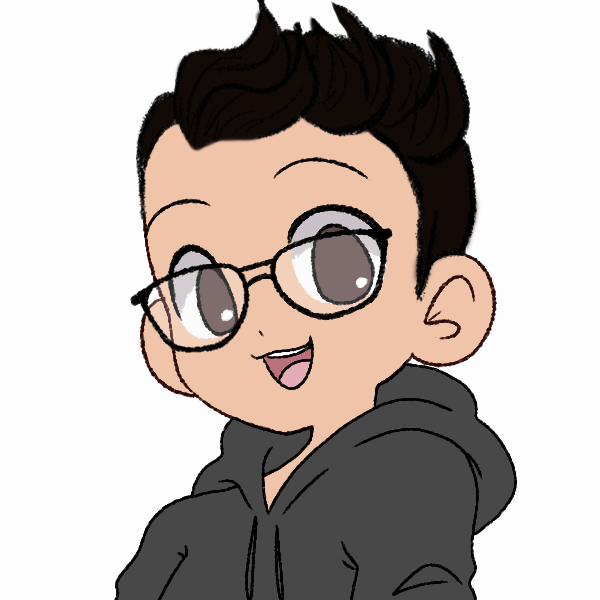

Estou com 28 anos, atualmente eu moro em São Bernardo do Campo, tive várias experiências com atendimento ao público pela vida tanto presencial, trabalhando em bares e restaurantes, e a distância trabalhando em call center, com essas experiências eu desenvolvi uma boa habilidade de comunicação, aprendi muito lidando com pessoas diversas pelo país.
Sempre gostei da área da tecnologia e desenvolvi toda a minha linha de estudo na área, fiz cursos na área de hardware e sou formado em design gráfico pela Unip, desde que me formei trabalho em criação de identidade visual, diagramação e materiais impressos, como designer desenvolvi gosto por motion, gosto muito de trabalhar com vídeos e animações, no último ano fiz algumas overlays e emojis para stramers, foram projetos desafiadores e experiências únicas, mas eu não me encontrei na área do design, e sempre foi uma meta estudar programação, busquei cursos, li sobre e estou neste bootcamp para adquirir todo o conhecimento possível, tanto habilidades técnicas quanto habilidades comportamentais, nessas habilidades comportamentais eu vi muito que desenvolvi ao logo da vida trabalhando em equipe, melhorando a minha comunicação e traçando rumos para o meu futuro, mas não tinha idéia da filosofia por trás disso.
Esse curso da generation dá uma base sólida para a gente conseguir se desenvolver tanto como pessoa quanto como programador, e uma vez que eu me especializar em Java vou buscar conhecer mais sobre outras linguagens e me especializar nas que me identifique mais, pois eu acredito que conhecimento nunca é demais.
